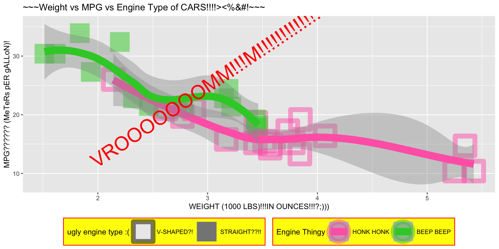

ggplot(mtcars, aes(x = wt, y = mpg, shape = factor(vs), color = factor(vs))) +
geom_point(size = 10, stroke = 5, alpha = 0.5) +
geom_smooth(size = 5) +
labs(
x = "WEIGHT (1000 LBS)!!!IN OUNCES!!!?;)))",
y = "MPG?????? (MeTeRs pER gALLoN)!",
title = "~~~Weight vs MPG vs Engine Type of CARS!!!!><%&#!~~~",
shape = "ugly engine type :(",
color = "Engine Thingy"
) +
scale_shape_manual(
values = c(0, 15),
labels = c("V-SHAPED?!", "STRAIGHT??!!")
) +
scale_color_manual(
values = c("hotpink", "limegreen"),
labels = c("HONK HONK", "BEEP BEEP")
) +
annotate("text", x = 3, y = 25, label = "VROOOOOOOMM!!!M!!!!!!!!!!!!!!",
color = "red", size = 10, angle = 34) +
theme(
legend.position = "bottom",
legend.background = element_rect(fill = "yellow", color = "red"))